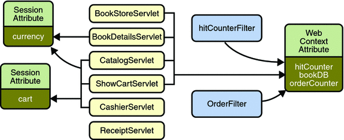

Sharing Information
Web components, like most objects, usually work with other objects to accomplish their tasks. There are several ways they can do this. They can use private helper objects (for example, JavaBeans components), they can share objects that are attributes of a public scope, they can use a database, and they can invoke other web resources. The Java Servlet technology mechanisms that allow a web component to invoke other web resources are described in Invoking Other Web Resources.
Using Scope Objects
Collaborating web components share information by means of objects that are maintained as attributes of four scope objects. You access these attributes using the [get|set]Attribute methods of the class representing the scope. Table 4-3 lists the scope objects.
Table 4-3 Scope Objects
Scope Object |
Class |
Accessible From |
|---|---|---|
Web context |
Web components within a web context. See Accessing the Web Context. |
|
Session |
Web components handling a request that belongs to the session. See Maintaining Client State. |
|
Request |
subtype of javax.servlet.ServletRequest |
Web components handling the request. |
Page |
The JSP page that creates the object. See Using Implicit Objects. |
Figure 4-1 shows the scoped attributes maintained by the Duke’s Bookstore application.
Figure 4-1 Duke’s Bookstore Scoped Attributes
Controlling Concurrent Access to Shared Resources
In a multithreaded server, it is possible for shared resources to be accessed concurrently. In addition to scope object attributes, shared resources include in-memory data (such as instance or class variables) and external objects such as files, database connections, and network connections.
Concurrent access can arise in several situations:
Multiple web components accessing objects stored in the web context.
Multiple web components accessing objects stored in a session.
Multiple threads within a web component accessing instance variables. A web container will typically create a thread to handle each request. If you want to ensure that a servlet instance handles only one request at a time, a servlet can implement the SingleThreadModel interface. If a servlet implements this interface, you are guaranteed that no two threads will execute concurrently in the servlet’s service method. A web container can implement this guarantee by synchronizing access to a single instance of the servlet, or by maintaining a pool of web component instances and dispatching each new request to a free instance. This interface does not prevent synchronization problems that result from web components accessing shared resources such as static class variables or external objects. In addition, the Servlet 2.4 specification deprecates the SingleThreadModel interface.
When resources can be accessed concurrently, they can be used in an inconsistent fashion. To prevent this, you must control the access using the synchronization techniques described in the Threads lesson in The Java Tutorial, Fourth Edition, by Sharon Zakhour et al. (Addison-Wesley, 2006).
The preceding section showed five scoped attributes shared by more than one servlet: bookDB, cart, currency, hitCounter, and orderCounter. The bookDB attribute is discussed in the next section. The cart, currency, and counters can be set and read by multiple multithreaded servlets. To prevent these objects from being used inconsistently, access is controlled by synchronized methods. For example, here is the Counter class, located at tut-install/javaeetutorial5/examples/web/bookstore1/src/java/com/sun/bookstore1/util/:
public class Counter {
private int counter;
public Counter() {
counter = 0;
}
public synchronized int getCounter() {
return counter;
}
public synchronized int setCounter(int c) {
counter = c;
return counter;
}
public synchronized int incCounter() {
return(++counter);
}
}
Accessing Databases
Data that is shared between web components and is persistent between invocations of a web application is usually maintained by a database. Web components use the Java Persistence API to access relational databases. The data for Duke’s Bookstore is maintained in a database and is accessed through the database access class tut-install/javaeetutorial5/examples/web/bookstore1/src/java/com/sun/bookstore1/database/BookDBAO. For example, ReceiptServlet invokes the BookDBAO.buyBooks method to update the book inventory when a user makes a purchase. The buyBooks method invokes buyBook for each book contained in the shopping cart, as shown in the following code.
public void buyBooks(ShoppingCart cart) throws OrderException{
Collection items = cart.getItems();
Iterator i = items.iterator();
try {
while (i.hasNext()) {
ShoppingCartItem sci = (ShoppingCartItem)i.next();
Book bd = (Book)sci.getItem();
String id = bd.getBookId();
int quantity = sci.getQuantity();
buyBook(id, quantity);
}
} catch (Exception ex) {
throw new OrderException("Commit failed: " +
ex.getMessage());
}
}
public void buyBook(String bookId, int quantity)
throws OrderException {
try {
Book requestedBook = em.find(Book.class, bookId);
if (requestedBook != null) {
int inventory = requestedBook.getInventory();
if ((inventory - quantity) >= 0) {
int newInventory = inventory - quantity;
requestedBook.setInventory(newInventory);
} else{
throw new OrderException("Not enough of "
+ bookId + " in stock to complete order.");
}
}
} catch (Exception ex) {
throw new OrderException("Couldn’t purchase book: "
+ bookId + ex.getMessage());
}
}To ensure that the order is processed in its entirety, the call to buyBooks is wrapped in a single transaction. In the following code, the calls to the begin and commit methods of UserTransaction mark the boundaries of the transaction. The call to the rollback method of UserTransaction undoes the effects of all statements in the transaction so as to protect the integrity of the data.
try {
utx.begin();
bookDB.buyBooks(cart);
utx.commit();
} catch (Exception ex) {
try {
utx.rollback();
} catch(Exception e) {
System.out.println("Rollback failed: "+e.getMessage());
}
System.err.println(ex.getMessage());
orderCompleted = false;}
}